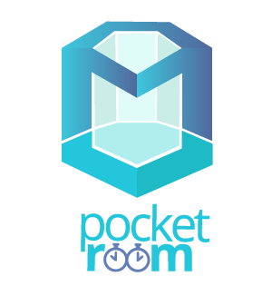

<!-- splash screen start -->
<div id="custom-overlay" [style.display]="splash ? 'flex': 'none'">
    <div class="flb">
        <div class="Aligner-item Aligner-item--top"></div>
        
        <div class="Aligner-item Aligner-item--bottom"></div>
    </div>
</div>
<!-- splash screen end -->
<ion-menu id="adminMenu" [content]="content" persistent="true" enable-menu-with-back-views="false" side="left">

    <ion-header>
        <ion-toolbar>
            <ion-title>Menu</ion-title>
        </ion-toolbar>
    </ion-header>

    <ion-content>
        <ion-list>
            <button menuClose ion-item *ngFor="let p of pages1" (click)="openPage(p)">
        {{p.title}}
      </button>
            <ion-item>
                <ion-label>Notifications</ion-label>
                <ion-toggle value="notification" checked="true" color="primary"></ion-toggle>
            </ion-item>
            <button ion-item (click)="LogOut()">Logout</button>
        </ion-list>
    </ion-content>

</ion-menu>

<ion-menu id="userMenu" [content]="content" persistent="true" enable-menu-with-back-views="false" side="left">

    <ion-header>
        <ion-toolbar>
            <ion-title>Menu</ion-title>
        </ion-toolbar>
    </ion-header>

    <ion-content>
        <ion-list>
            <button menuClose ion-item *ngFor="let p of pages2" (click)="openPage(p)">
            {{p.title}}
          </button>
            <ion-item>
                <ion-label>Notifications</ion-label>
                <ion-toggle value="notification" checked="true" color="primary"></ion-toggle>
            </ion-item>
            <button ion-item (click)="LogOut()">Logout</button>
        </ion-list>

    </ion-content>

</ion-menu>
<ion-nav id="nav" [root]="rootPage" #content swipeBackEnabled="false"></ion-nav>